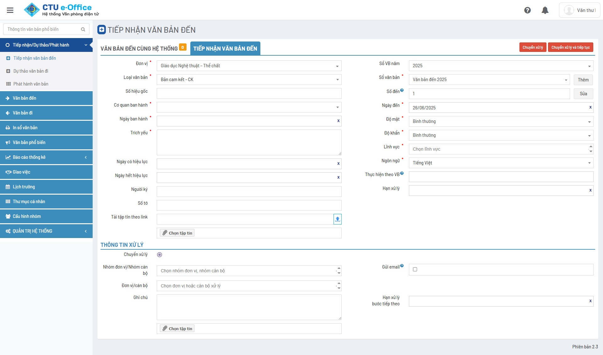

Giới thiệu
Văn bản đến
Văn bản đi
Mô hình tổng quan
Chức năng
Kỹ thuật
Menu
Giới thiệu
Giải pháp
Đặc điểm nổi bật
Mô hình tổng quan
Chức năng
Kỹ thuật
GIAO DIỆN
Văn bản đến
Văn bản đi
Lịch

❮
❯
Quy trình xử lý Văn bản đi
❮
❯
Quy trình Đăng ký lịch
4 giai đoạn chính với vai trò rõ ràng của từng bộ phận
↑